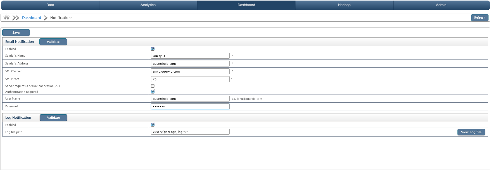

Notifications
In this chapter
This chapter shows how to configure notification settings.
Notifications
When an notification is raised a notice is sent out to all the concerned users that a particular event has occurred and needs to be dealt with. This process is called notification.
QueryIO provides two modes of notification. They are:
- Email notification
- Log notification
The preferred notification mode can be selected by enabling it and specifying the appropriate sender details.
Email notification
Configure email settings for the account from which mails will be sent.
- Enabled: Select check box to enable email notification..
- Sender's Name: User friendly name that will be seen when you receive a mail from QueryIO as Sender.
- Sender's Address: The address that will be used to send out the email that is your email address For example, xyz@queryio.com
- SMTP Server: The SMTP address of the mail server is to be entered here. For example, smtp.queryio.com
- SMTP Port: The outgoing SMTP port of the mail server is to be entered here. Default is 25.
- Server requires a secure connection(SSL): Check if secure connection is required.
- Authentication: If the mail server requires authentication, authentication details are also required.
- User Name: User name of the sender's Email.
- Password: Password of the above username.
Log notification
In case the notification is to be logged to a log file then the following information is required.
- Enabled: Select check box to enable log notification..
- Log file path: Path of the log file to which QueryIO should log the notification message.

- Validate: Click on 'Validate' to check the configured notification settings.
- Save: Save notification settings.
- View Log File: Open the configured log notification file.
Copyright © 2015 QueryIO Corporation. All Rights Reserved.
QueryIO, "Big Data Intelligence" and the QueryIO Logo are trademarks
of QueryIO Corporation. Apache, Hadoop and HDFS are trademarks of The Apache Software Foundation.